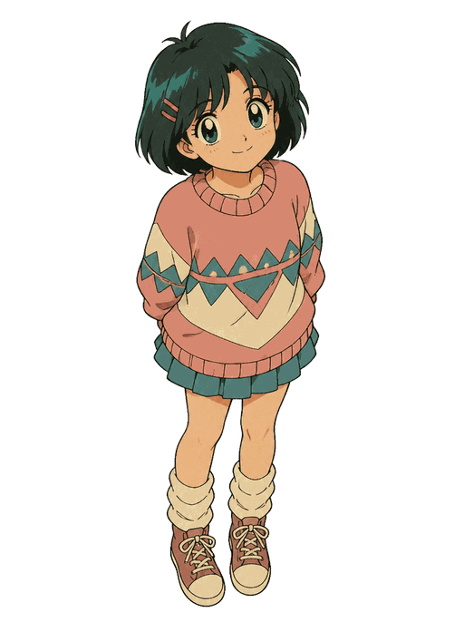

Private from visited websites, not from your configured server. Your messages and recent conversation are sent only when you press Send. No page context is included.
The last 40 messages are stored locally in this browser profile. The most recent 12 are sent for context. Clear history below to delete the local conversation and draft; this cannot delete copies held by the server.